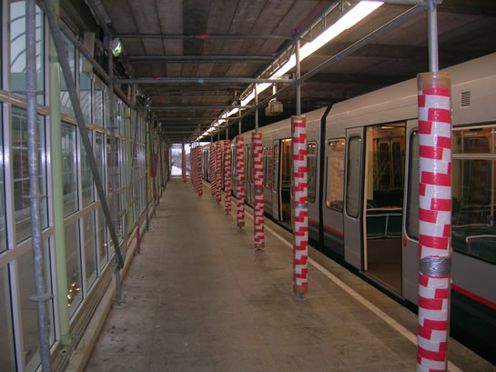

Stand van zaken metrostation De Akkers en meer...
- dinsdag 02 december 2008 10:09
- Geschreven door Rik
Na de brand op metrostation De Akkers in de nacht van 31 oktober op 1 november jl., lijkt er op het eerste gezicht nog weinig gedaan te zijn. Dat is niet geheel waar. Zo is perron 1 al enkele weken toegankelijk en is er begonnen met schoonmaken van de vuilste delen van het metrostation.
De dienstruimte, waar de bestuurders in hun pauze verblijven, heeft flink wat schade opgelopen. Momenteel is het dak van de dienstruimte afgedicht met een groot oranje zeil. De stationsoverkapping van perron 1 is door de brand zo beschadigd, dat de gaten erin zitten. Deze overkapping wordt gereconstrueerd. De binnenzijde van de overkapping op perron 1 is door middel van steigers en houten planken aan het oog onttrokken. De metrotreinen kunnen hier op normale wijze halteren. Het perron staat echter wel vol met pilaren, die steun geven aan een tijdelijk plafond. Omdat deze pilaren met dikke, zachte materialen zijn ingepakt, mogen ze geen gevaar opleveren voor (onoplettende) reizigers.
De bestuurders hebben hun standpunt momenteel in een portocabin op het perron. Deze situatie blijft gehandhaafd totdat de voormalige dienstruimte weer opgeknapt is. Omdat in de portocabin geen toilet aanwezig is, kunnen de bestuurders gebruik maken van een chemisch toilet op perron 2.
Zeker is dat er een extra vluchtweg komt. Het station heeft nu maar één vluchtweg in geval van calamiteiten. Dat is naar hedendaagse maatstaven te weinig. De RET inventariseert of op andere metrostations dergelijke aanpassingen nodig zijn.

De ijzeren pilaren zijn met dik, zacht materiaal omgeven en omwikkeld met afzetlint.
Een metrotrein van de serie 5300 richting Capelle a/d IJssel staat gehalteerd op de plaats waar de 5201 en de 5229 uitbrandden.
De portocabin staat tegenover de lift. In deze cabin pauzeren de metrobestuurders.
Vanaf de houten vlonder bij de lift, heeft men een goed overzicht over het perron.
5201 & 5229
De rijtuigen 5201 en 5229 (type T) staan in afwachting van de sloop nog steeds op het werkemplacement van remise Waalhaven. Slechts een deel van de B-bak van rijtuig 5229 is ontdaan van het witte zeil. Hieronder enkele foto's van de beide rijtuigen.
De afgebrande kop van rijtuig 5229 staat zonder zeil. Goed is te zien, hoe de brand de lak verwijderd heeft.
Het interieur is door de brand flink beschadigd. De binnenzijde van het dak is grotendeels weggesmolten.
De brand verwoestte o.a. de ATB-kast, links naast de voormalige cabinedeur.
Coolhaven
Enkele weken geleden is er begonnen met de revitalisering van metrostation Coolhaven. Dit metrostation heeft nog nooit een grote opfrisbeurt gehad. Op de plaats van de verwijderde ornamenten, zijn metalen strips geplaatst. Op de strips worden witgrijze kunststof platen opgehangen. Het station komt zo min of meer in dezelfde stijl van de meeste andere Rotterdamse metrostations. Ook de roltrappen en verlichting worden vernieuwd.
In de hal van het station wordt een Boterhamexpress gerealiseerd. Op 16 januari opent dit filiaal de deuren. Eerder werden de stations Kralingse Zoom, Dijkzigt en Beurs voorzien van een dergelijk snackpunt.
Op de wand zijn de kunststofplaten bevestigd aan eerder opgehangen metalen strips.
Kralingse Zoom
Op de perrons 1 en 3 zijn in navolging van perron 2 en 4 ook de drie achterste wachtruimtes verwijderd. De ruimtes, die alleen toereikend waren als er een vierwagentrein halteerde, trokken vooral overlastgevende personen aan. Aangezien in de huidige reizigersdienst geen vierwagentreinen rijden, werden de wachtruimtes nauwelijks gebruikt.
OV-chipkaart
De eerder vemelde datum van 1 april om de OV-chipkaart als enige vervoerbewijs in de metro te laten gelden, wordt niet gehaald. De nieuwe deadline is geprojecteerd op juli 2007. Om de OV-chipkaart in te mogen voeren, moet aan een aantal voorwaarden worden voldaan. Zo moet het systeem méér dan 300.000 transacties per dag aankunnen en moeten bus en tram ook chipkaartproof zijn.
De deurtjes van de toegangspoortjes van de Rotterdamse metro worden vernieuwd. Dat heeft de RET afgelopen week bekend gemaakt. De deurtjes blijken niet stevig genoeg te zijn. De kosten van het vervangen zijn voor de leverancier van de toegangspoortjes.
Sinds 1 januari is het mogelijk om de persoonlijke OV-chipkaart automatisch op te waarderen. Men moet hiervoor een formulier invullen bij een Verkoop- & Informatiepunt. Zodra het reistegoed na uitchecken onder de €5,00 komt, wordt er door middel van automatische incasso naar gelang €10,00 of €20,00 op de chipkaart geladen. Voordeel van 'autoreload', zoals het systeem heet, is dat men niet meer verplicht is de kaart op te waarderen bij een automaat of verkooppunt.
RandstadRail
De projectorganisatie RandstadRail heeft laten weten dat op z'n vroegst pas in februari weer begonnen wordt met testritten tussen de stations Nootdorp en Den Haag Centraal. Na de ontsporingen nabij station Forepark en halte Ternoot op 29 november 2006, is de lightrailverbinding tussen Zoetermeer - Den Haag v.v. en Nootdorp - Den Haag v.v. per direct stilgelegd.
Waneer de verbinding weer voor reizigers toegankelijk zal zijn, is nog niet bekend. Voorlopig rijden de vervangende buslijnen nog. Het vervoer is overigens nog steeds gratis.